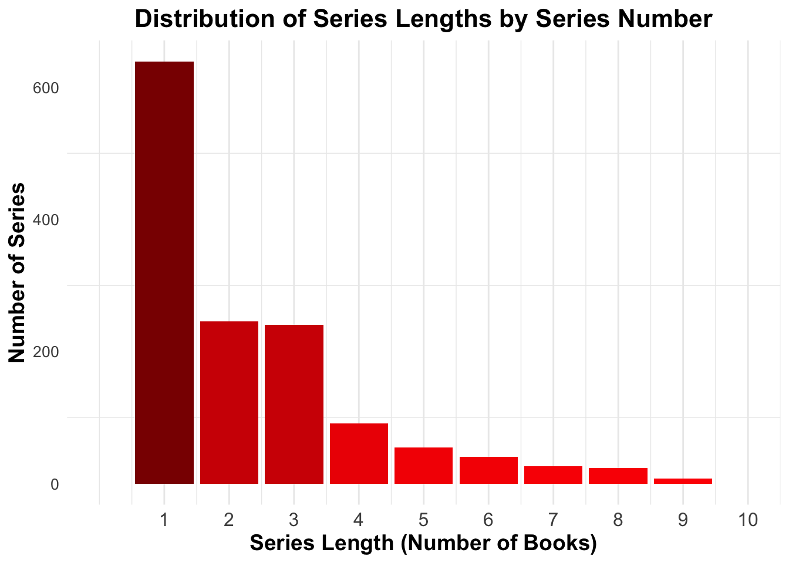

Sequels
Exploring sequels: Are They Worth Reading?
In this page, we will explore book sequels and analyze whether they live up to the original works. First let’s take a look at how many books have a series.
Distribution of series lengths
series_length <- sequel |>
mutate(series = str_extract(title, "\\(.*\\)"),
series_number = as.numeric(str_sub(str_extract(series, ', #[0-9]+\\)$'),4,-2)),
series_name = str_sub(str_extract(series, '\\(.*,'),2,-2)) |>
filter(!is.na(series_number)) |>
group_by(series_name) |>
summarise(max_series_number = max(series_number, na.rm = TRUE)) |>
count(max_series_number, name = "n_series")
ggplot(series_length, aes(x = max_series_number, y = n_series)) +
geom_bar(stat = "identity", fill = "steelblue") +
labs(
x = "Series Length (Number of Books)",
y = "Number of Series",
title = "Distribution of Series Lengths"
) +
theme_minimal()
Comparing Average Ratings: First vs Second Books
#Select books that have a sequel
sequel_data <- sequel |>
mutate(series = str_extract(title, "\\(.*\\)"),
series_number = as.numeric(str_sub(str_extract(series, ', #[0-9]+\\)$'),4,-2)),
series_name = str_sub(str_extract(series, '\\(.*,'),2,-2)) |>
filter(series_number %in% c(1, 2))
#Boxplot of average ratings of first vs second book
ggplot(sequel_data, aes(x = factor(series_number), y = average_rating, color = factor(series_number))) +
geom_boxplot() +
coord_cartesian(ylim = c(3, 5)) +
labs(x = "Book in Series", y = "Average Rating") +
scale_color_manual(values = c('blue', 'red')) +
theme_minimal() +
theme(legend.position = "none") 
Based off of average ratings, good reads users generally rate the sequel higher than the original book.
Table of First vs Second Book Ratings
sequel_performance <- sequel_data |>
group_by(series_name) |>
arrange(series_number) |>
summarise(
rating_diff = diff(average_rating),
.groups = "drop"
)## Warning: Returning more (or less) than 1 row per `summarise()` group was deprecated in
## dplyr 1.1.0.
## ℹ Please use `reframe()` instead.
## ℹ When switching from `summarise()` to `reframe()`, remember that `reframe()`
## always returns an ungrouped data frame and adjust accordingly.
## Call `lifecycle::last_lifecycle_warnings()` to see where this warning was
## generated.prop_sequel_higher <- mean(sequel_performance$rating_diff > 0, na.rm = TRUE)
cat(sprintf("In %.1f%% of cases, the sequel is rated higher than the first book.",
prop_sequel_higher * 100))## In 71.8% of cases, the sequel is rated higher than the first book.Hypothesis Test
While the visualizations suggest that sequels may outperform the original book in terms of average ratings, let’s apply statistical techniques to formally test this hypothesis.
t_test_result <- t.test(average_rating ~ series_number, data = sequel_data)
t_test_table <- t_test_result |>
tidy() |>
knitr::kable(caption = "T-Test Results: Comparing Ratings of First and Second Books")
print(t_test_table)##
##
## Table: T-Test Results: Comparing Ratings of First and Second Books
##
## | estimate| estimate1| estimate2| statistic| p.value| parameter| conf.low| conf.high|method |alternative |
## |----------:|---------:|---------:|---------:|-------:|---------:|----------:|----------:|:-----------------------|:-----------|
## | -0.0940757| 3.980256| 4.074332| -9.373965| 0| 1375.975| -0.1137629| -0.0743884|Welch Two Sample t-test |two.sided |Regression Models
lm_sequel <- lm(average_rating ~ factor(series_number) + factor(series_name), data = sequel_data)